1.クリエイターセンターに登録する
クリエイターレベル1でも幻境ステージを制作することはできます。
しかし、クリエイターセンターに登録し、クリエイターレベルを上げることで多くの機能を開放することができます。
特にクリエイターレベル2で解放されるテキスト表示機能は、これから幻境ステージを制作していく上でとてもよく使う機能になります。
早めに解放しておくことをお勧めします。
⭐クリエイターセンターの登録方法
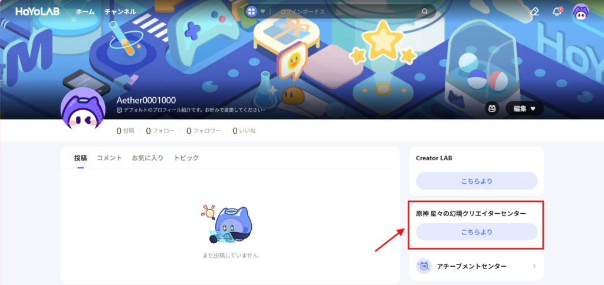
動画ではゲーム内からクリエイターセンターに移動していますが、今回はHoYoLABから移動してみます。
マイページの「原神 星々の幻境クリエイターセンター こちらより」をクリック
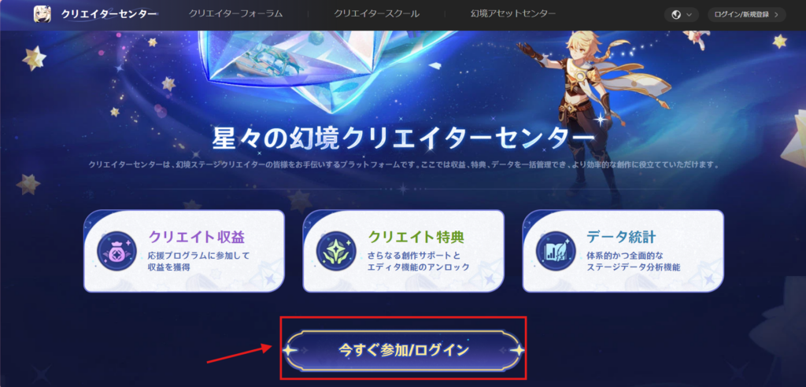
開いたページの「今すぐ参加/ログイン」をクリック
その後は規約に同意してサーバーを選択して登録完了です。
⭐クリエイターレベルについて
幻境ステージで遊んだ時に、制作者の名前の横にレベルが表示されているのを見たことあると思います。
クリエイターセンターからも確認できるこのレベルは、そのクリエイターの熟練度を表すものだけではありません。
クリエイターレベルは「クリエイターのレベル」を示すシステムで、幻境ステージを投稿したり、タスクをクリアしたりすることで、レベルを上げていくことができます。
上げることで様々な特典を利用できるようになるため、欲しい特典がある場合はそのレベルになることを目標にタスクをこなしていきましょう。
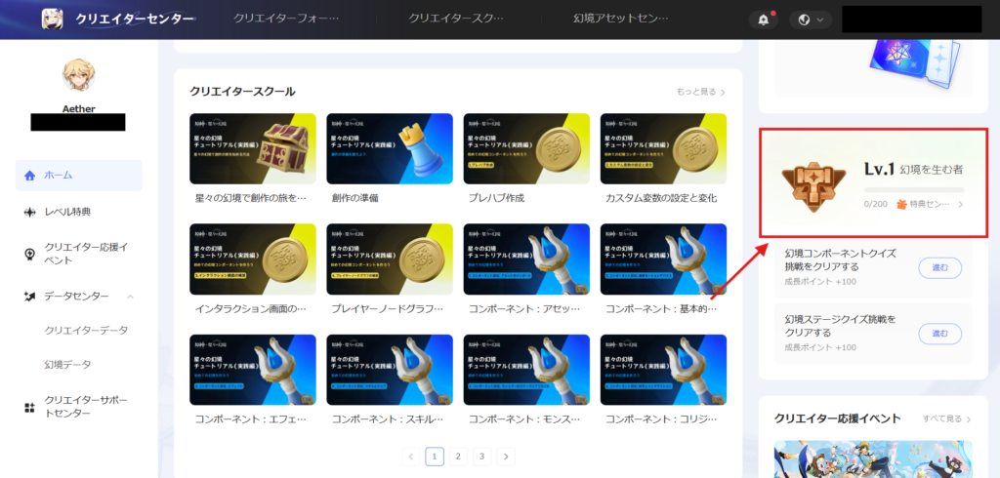
🌸Lv.1 幻境を生む者
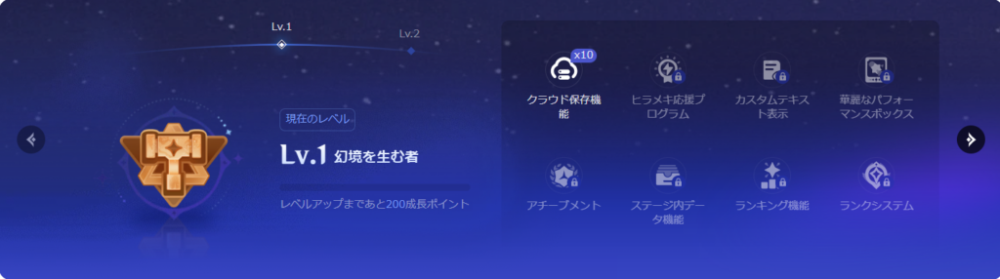
すべてのクリエイターは、レベル1から始まります。
・クラウド保存機能×10
制作した幻境ステージを10個まで公開できるようになります。
上限まで公開した後は、公開済みのステージを削除してからでないと新規にステージを公開することができません。
🌸Lv.2 創造の弟子
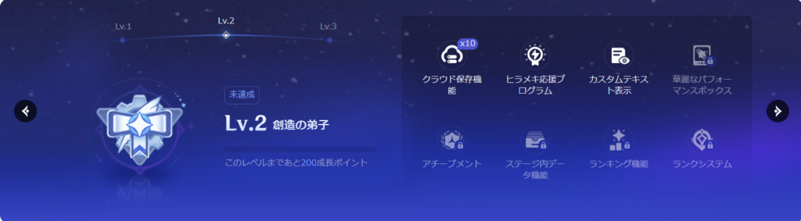
クリエイターセンターに登録し、「幻境コンポーネントクイズ」と「幻境ステージクイズ」をクリアすることでレベル2になることができます。
・ヒラメキ応援プログラム
毎バージョン開催されているクリエイター応援イベント「ヒラメキ応援プログラム」に参加することができるようになります。
ただし、このイベントに参加するにはクリエイターレベル2になる以外に以下のすべての参加資格を満たしている必要があります。
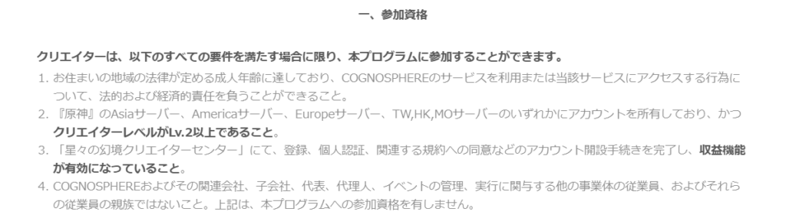
・カスタムテキスト表示
オプションタブやテキストボックスなどで編集したテキストをプレイヤーに表示することができるようになります。
テキスト機能はとても重要な機能なので、クリエイターレベル2には最低限あげることをお勧めします。
🌸Lv.3 幻を描く画家
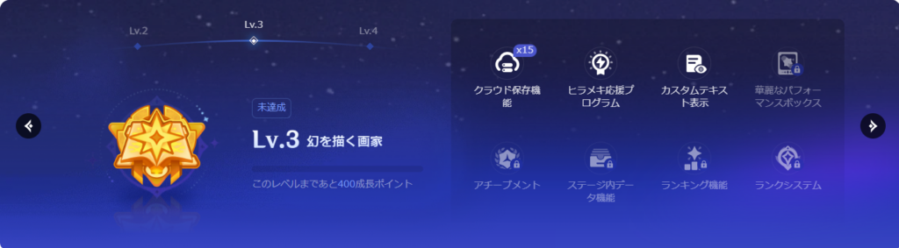
以下の条件を満たすことでレベル3になることができます。
・幻境ステージを1つ以上投稿する
・幻境のプレイ指数の累計が一定以上に達する（≥15）
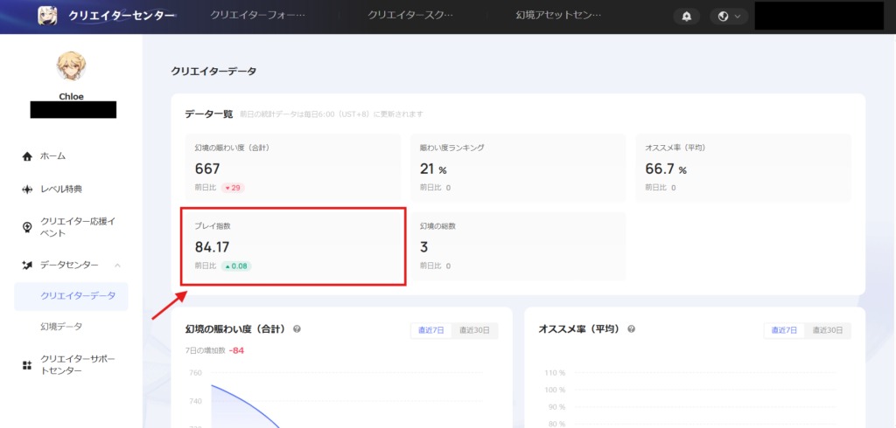
データセンターの「クリエイターデータ」からプレイ指数を確認することができます。
このプレイ指数は投稿した幻境ステージを遊んでもらうことで上がっていき、数値が減ることはありません。
プレイ指数の上限は100です。
・クラウド保存機能×15
公開できるステージ数が5個増え、制作した幻境ステージを15個まで公開できるようになります。
🌸Lv.4 夢紡ぎ
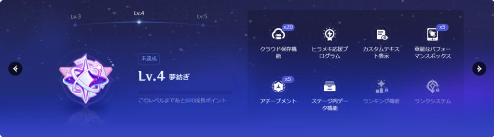
以下の条件を満たすことでレベル4になることができます。
・幻境ステージを2つ以上投稿する
・幻境のプレイ指数の累計が一定以上に達する（≥80）
上記2つの条件を満たすか、毎バージョン開催されているイベント「クリエイター創作大会」で優秀な成績を収める
※Ver7.1で「クリエイター創作大会」はなくなり、「幻境創作コンテスト」が始まりました。
おそらく、「幻境創作コンテスト」でも引き続き優秀な成績を収めた方は、レベル4になれると思われます。
・クラウド保存機能×20
公開できるステージ数が5個増え、制作した幻境ステージを20個まで公開できるようになります。
・華麗なパフォーマンスボックス×5
プレイヤーにギフトボックスを付与することができるようになり、1つのステージにつき5個まで設定できます。
このギフトボックスは無料と有料のものがあり、「華麗なパフォーマンスボックス」は無料のものになります。
・アチーブメント×5
プレイヤーがゲーム内で達成したアチーブメントを記録できるようになり、1つのステージにつき5個まで設定できます。
(通常アチーブメントが5個、それとは別にマスターアチーブメントが1個設定できます。)
・ステージ内データ機能
プレイヤーが幻境ステージで遊んだ時のゲームデータを保存できるようになります。
保存したデータは、次に幻境ステージに入るときに反映されます。
・幻境任務
ステージに更新可能な任務システムを設定することができるようになります。
※Luna7で追加されました
・幻境ごほうびギフトボックス
幻境任務に報酬を追加することができるようになります。
※Luna7で追加されました
🌸Lv.5 降臨者
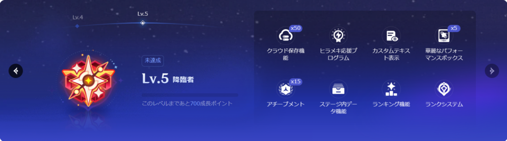
以下の条件を満たすことでレベル5になるための審査を申請することができるようになります。
・クリエイターレベルが4に到達している
・収益化機能が有効になっている
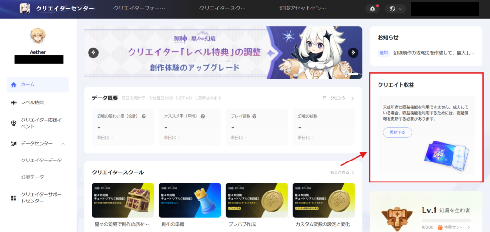
クリエイターセンターから認証情報を更新して収益化機能をオンにする必要があります。
・過去4バージョンにおいて、少なくとも1つの幻境ステージがアクティブ指数が60に到達している
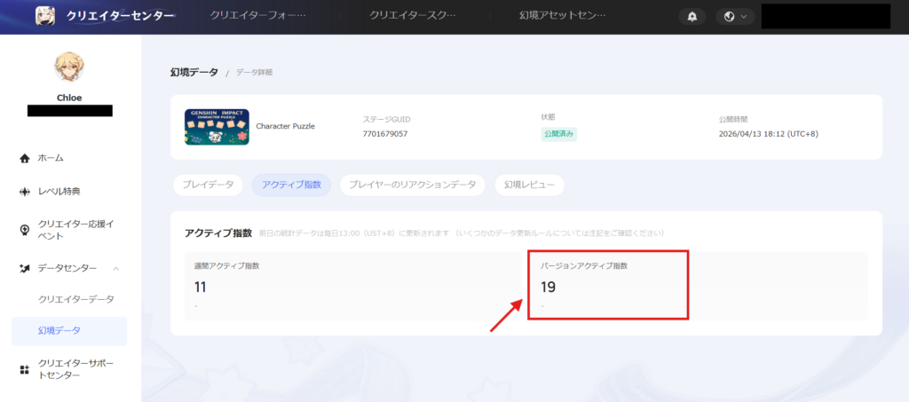
データセンターの「幻境データ」から幻境ステージを選択し、「アクティブ指数」のタブから確認することができます。
アクティブ指数60はかなり難易度が高いです。
とても人気の高い幻境ステージである「DPS計測かかし++」が登場した時の、バージョンアクティブ指数が150なので、おそらく150が上限だと思われます。
上記3つの条件を満たした上で、クリエイターセンターからレベルアップ審査を申請して審査を通過するか、
毎バージョン開催されているイベント「クリエイター創作大会」で優秀な成績を収める
※Ver7.1で「クリエイター創作大会」はなくなり、「幻境創作コンテスト」が始まりました。
おそらく、「幻境創作コンテスト」でも引き続き優秀な成績を収めた方は、レベル5になれると思われます。
※他にも「クリエイター創作大会」以外の幻境関連イベントで優秀な成績を収めた方や
アクティブ指数が60に到達していなくても運営側から声をかけられたり、
既にレベル5のクリエイターの共同制作者になったなど色々なルートでレベル5になった方を確認しています。
・クラウド保存機能×50
公開できるステージ数が30個増え、制作した幻境ステージを50個まで公開できるようになります。
・華麗なパフォーマンスボックス×20
設定できる華麗なパフォーマンスボックスが15個増え、1つのステージにつき20個まで設定できるようになります。
・アチーブメント×15
設定できるアチーブメントが10個増え、1つのステージにつき15個まで設定できるようになります。
(通常アチーブメントが15個、それとは別にマスターアチーブメントが1個設定できます。)
・ランキング機能
幻境ステージ内の情報を外部システムに記録することができます。
(スコア、クリアタイム、勝利数などがランキングになっていることが多いです。)
記録されたランキング情報は、プレイヤーが幻境ステージの情報を閲覧したときに確認することができます。
・ランクシステム
幻境ステージ内にランクスコアを設定できるようになり、集計時の状態によって、プレイヤーは異なるランクスコアを獲得します。
ランク機能をオンにした幻境ステージでは、プレイヤーはマッチングする際、ランクスコアの影響を受けます。
・多彩なパフォーマンスボックス×40
有償のギフトボックスであり、内容としては「華麗なパフォーマンスボックス」とほとんど変わりません。
収益の一部がクリエイターに還元される仕組みになっています。
※Luna4で追加されました